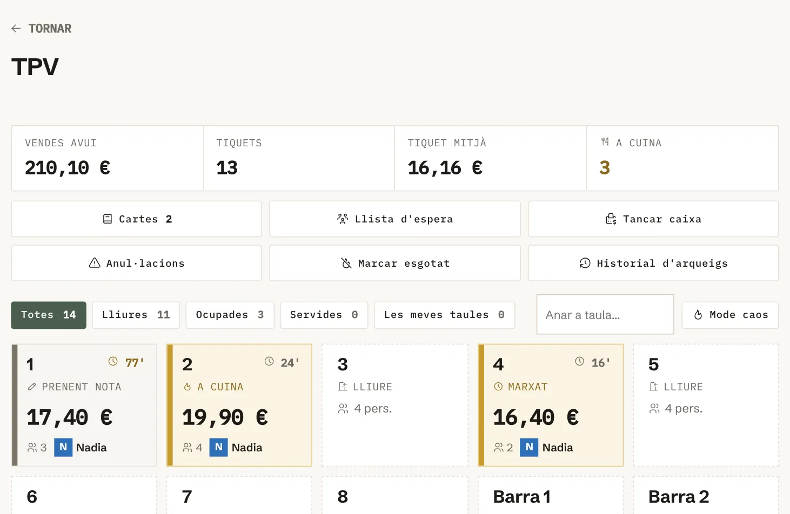
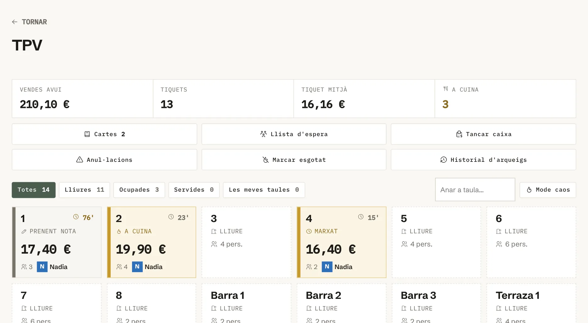
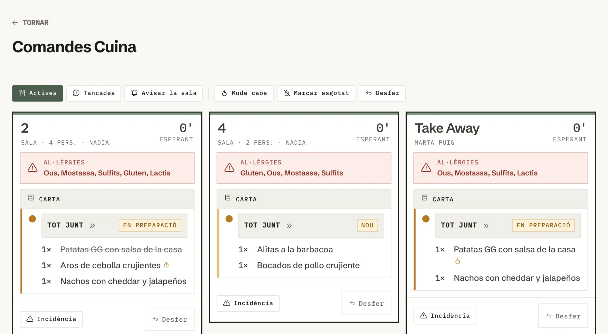
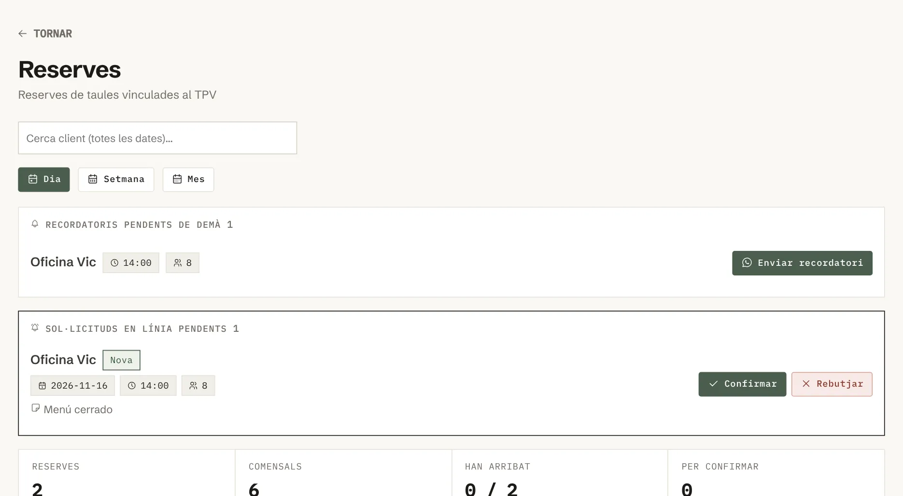
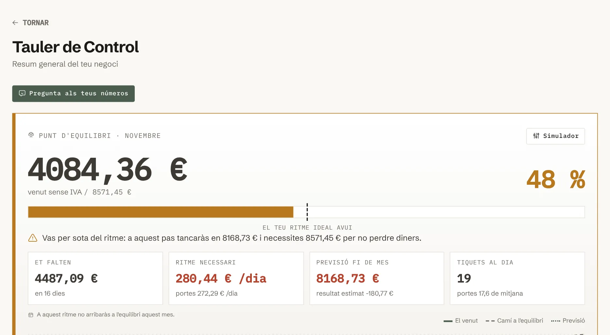
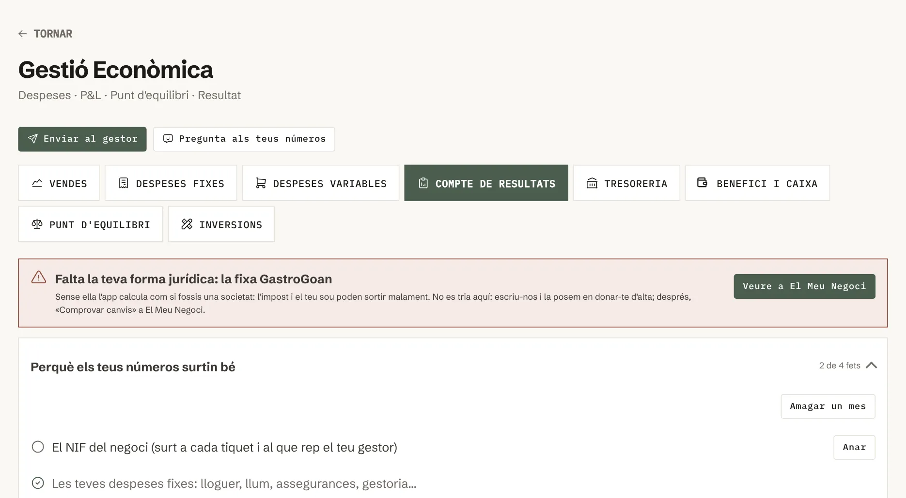

02 · App GastroGoan
Una app per a tot el teu restaurant..
TPV, cuina, reserves, personal i números en un únic lloc, que funciona fins i tot sense internet. Pagues una llicència a l'any i la deixem configurada amb tu.
20 € al mes en pagament anual · el primer any inclou la posada a punt

L'app per dins
Això és el que faràs servir cada dia.
Captures reals de l'app, amb les dades d'un restaurant d'exemple.

Taules amb el seu estat, el temps que porten obertes i el total, d'un cop d'ull. Pensat per al servei, amb una sola mà.

Les comandes arriben a cuina en temps real, amb les al·lèrgies en vermell i el que es prepara a cada moment.

Reserves del dia, sol·licituds del web i recordatoris per WhatsApp, vinculades a les taules del TPV.

El teu punt d'equilibri del mes i si vas per davant o per darrere, amb les xifres reals de les teves vendes.

Compte de resultats amb l'estructura que espera el teu gestor: vendes, aprovisionaments, personal, EBITDA.
El problema
Quantes subscripcions pagues avui?
L'hostaleria s'ha omplert de quotes: una per al TPV, una altra per a la carta digital, una altra per a les reserves… Cadascuna puja de preu cada any i cap parla amb les altres.
Exemple orientatiu d'un local mitjà. Els imports varien segons el proveïdor i la mida del negoci.
a l'any, per sempre, en sis quotes que no es parlen entre elles.
a l'any a partir del segon, amb tot dins. El primer any, 300 € amb la posada a punt.
Estalvi estimat: més de 3.000 € l'any.
Què inclou
Sala, cuina i gestió, en una sola llicència.
Tot el que apareix aquí és a l'app avui, sense mòduls de pagament a part.
Sala
- TPV completTaules, comandes, comptes dividits, propines, cobrament amb targeta, efectiu o val regal, i tancament de caixa.
- Reserves i comandes en líniaUn web propi perquè els teus clients reservin, demanin per emportar o a domicili i segueixin la comanda.
- Clients i promocionsFitxa de client, fidelitat, vals regal i novetats per email i WhatsApp.
Cuina
- Pantalla de comandesEl que es demana a sala surt a cuina a l'instant, amb al·lèrgies i notes.
- Escandalls i fitxes tècniquesEl cost real de cada plat, el food cost i la recepta pas a pas.
- Estoc, minves i comandesInventari al dia, avisos de mínim, comandes a proveïdor i recepció d'albarans.
- APPCC sense paperNeteja, temperatures i al·lèrgens amb el seu registre, a punt per a una inspecció.
Gestió
- Gestió econòmicaDespeses, tresoreria, compte de resultats, punt d'equilibri i previsió d'impostos.
- Tauler de controlVendes, despeses i resultat del dia, de la setmana i del mes, amb alertes del que demana atenció.
- PersonalHoraris, fitxatges, tasques i torns de cada empleat, amb el seu propi PIN.
- Enviament al gestorUn paquet amb els teus llibres en Excel i les factures del període, a punt per a la teva gestoria.
Com començar
De la compra al teu primer servei, en tres passos.
Contractes la llicència
Pagament segur amb Stripe. La factura t'arriba per correu, i la renovació anual es cobra sola.
Reserves la reunió
Després de pagar tries dia i hora per a una videotrucada d'una hora. Hi donem d'alta el teu negoci i carreguem la teva carta, el teu horari i les teves taules.
Comences a treballar
T'ensenyo a fer-la servir amb el teu propi equip. Surts de la reunió amb l'app funcionant, no amb un manual.
Pensada per al servei
No s'atura quan s'atura tota la resta.
Funciona sense internet
Un cop instal·lada, obre i treballa sense connexió. Quan torna la xarxa, se sincronitza sola.
Les teves dades són teves
Es guarden al teu aparell i al teu propi núvol gratuït de Google, que configurem junts. GastroGoan no en cobra res.
Tot el teu equip, sense quotes per usuari
Cuina, barra i sala. Cada empleat entra amb el seu PIN i només veu el que li toca.
Sempre al dia
Les millores arriben soles i sense cost. Si ets en ple servei, no t'interromp: t'avisa i tries quan actualitzar.
Preu
Un preu clar. Sense lletra petita.
Una llicència per local i any, amb totes les funcions. La primera vegada inclou la reunió de posada a punt, perquè surtis funcionant des del primer dia.
- Totes les funcions de l'app
- Reunió de configuració d'una hora
- Actualitzacions incloses
- Sense cost per usuari ni per dispositiu
- Factura automàtica per correu
Després, 240 € + IVA a l'any: 20 € al mes.
Pagament segur amb Stripe. Es renova cada any i t'avisem abans de cobrar.
Preguntes freqüents
El que sovint em pregunten abans de començar.
Un altre dubte? Escriu-me i et responc jo.
Què passa després de pagar?
T'arriba la factura per correu i, en acabar el pagament, veus una pàgina per reservar la teva reunió de configuració. En aquella hora de videotrucada deixem el teu negoci funcionant.
Funciona sense connexió a internet?
Sí. Un cop instal·lada a la teva tauleta, mòbil o ordinador, l'app obre i treballa sense connexió: prendre notes, cobrar, treure comandes. Quan torna la xarxa, sincronitza. Internet només cal per sincronitzar entre aparells i per a les reserves i comandes que arriben pel web.
On es guarden les meves dades?
Al teu aparell i al teu propi projecte gratuït de Firebase (Google). El creem junts a la reunió. Així les dades són teves i GastroGoan no paga ni cobra res per emmagatzemar-les.
Quantes persones la poden fer servir?
Tot el teu equip, sense cost per usuari ni per dispositiu. Cada empleat entra amb el seu PIN i només veu la seva àrea.
I si tinc més d'un local?
Cada local porta la seva pròpia llicència. Pots obrir sucursals que hereten la teva carta, receptes, ingredients i protocols, i veure-les totes des del mateix compte.
Necessito coneixements tècnics?
No. Està pensada per al dia a dia d'un local. A la reunió inicial la configurem amb tu i la fas servir amb el teu equip abans de penjar.
Què passa si cau internet en ple servei?
Continues treballant. L'app funciona en local i sincronitza quan torna la connexió. Les comandes i reserves que arribin pel web esperen que la recuperis.
Com passo la meva carta i els meus productes?
A la reunió inicial carreguem amb tu la teva carta, els teus productes i els teus proveïdors. Si els tens en fulls de càlcul, t'ajudem a passar-los.
S'actualitza?
Sí, sola i sense cost. Si estàs treballant no t'interromp: t'avisa i tries quan actualitzar.
És segur el pagament?
Cobra Stripe, un dels processadors de pagament més usats del món. GastroGoan mai veu ni guarda les dades de la teva targeta.
El teu local treballa cada dia. Que l'app hi treballi.
Una llicència, una reunió i tot el teu restaurant en un sol lloc.